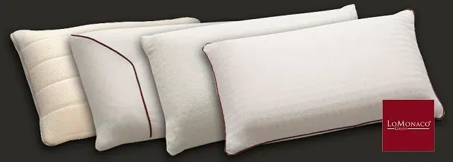

Diferentes tipos de almohadas

Además, pasamos una tercera parte de nuestro tiempo de reposo en la cama, por lo que el proceso de elección de la almohada debe llevarse con el mismo mimo que el de cualquier objeto de uso frecuente y cotidiano.
Cuando se trata de elegir colchón nos paramos y evaluamos las distintas opciones que tenemos, tanto de materiales, como de tamaños y modelo e intentamos sacar una conclusión para saber qué tipo se adapta mejor a nuestras necesidades, y con la almohada, debemos realizar un proceso similar. No podemos olvidar que, la almohada debe ir en consonancia con el propio colchón, son elementos necesarios para el equipo de descanso. Además “cada persona es un mundo” y este dicho no podría venirnos mejor para este caso: la elección final dependerá también de nuestras características y preferencias al dormir.
A continuación, desde Grupo Lo Monaco, queremos darte una orientación sobre los tipos de almohadas, materiales, tamaño y beneficios que te podemos ofrecer:
- Materiales: las almohadas al igual que el colchón, se componen de un núcleo (protegido por una funda de las que hablaremos posteriormente) cuya composición nos indica la firmeza que nos proporcionará. Este núcleo puede ser de viscoelástica, asegurándonos así sensaciones de adaptabilidad e ingravidez máximas. Además, encontraríamos almohadas de con núcleo de látex que son las que nos proporcionan la mayor firmeza (sin alejarnos siempre de la firmeza media) y confort natural. También podríamos optar por una almohada de viscolátex, que combina los beneficios de ambos materiales, siendo el interior de látex cubierto por una capa de visco (normalmente en la funda) para ofrecer un soporte óptimo. Por último, otro tipo de material que utilizamos para la fabricación de almohadas es la fibra, que proporciona adaptabilidad óptima, además de ser muy ligera y fácil de lavar. En cuanto a las fundas podemos encontrar las confeccionadas en algodón cutí (fresco y transpirable), en suave algodón velour o en tejido strech sencillo o acolchado.
- Pero no sólo el material importa: el tamaño, la altura y la forma de la almohada también son factores fundamentales para decidirnos sobre el tipo de almohada más adecuado:
o Tamaño: este depende de las medidas de nuestro colchón. Hay que pensar que el espacio que ocupa la almohada está siempre delimitado por el perímetro del colchón y ésta no debería quedarte ni demasiado pequeña, ni sobrepasar y colgar por los bordes de nuestra cama. Por otro lado debes tener en cuenta que si duermes en pareja, puedes tener la opción de una almohada doble aunque es más recomendable el uso de dos sencillas, adecuadas al ancho de la cama y que proporcionarán un soporte individualizado.
o La altura: Depende de las características del colchón y de las preferencias de la persona que va a dormir sobre ella. Hay que apuntar que la altura de la almohada y la sensación de posterior adaptabilidad depende mucho del material: no nos olvidemos que el látex se contrae menos que la viscoelástica, hecho que tenemos que tener presente a la hora de optar por una altura u otra. En Grupo Lo Monaco dispones de diferentes alturas en diferentes materias, altas (14 cm), medias (12 cm) o bajas (10 cm).
o La forma: existen almohadas que tienen formas especiales para adaptarse a necesidades especiales de descanso, como pueden ser las almohadas cervicales o anatómicas, que imitan los contornos de la zona que sustentan.
Resumiendo los parámetros y características anteriores, te detallamos los diferentes tipos de almohadas que tenemos actualmente en el catálogo de Grupo Lo Monaco:
- Almohada Comfort: Su núcleo de látex es la opción perfecta para un confort y suavidad máximos. Incorpora una funda de algodón, con atractivo acabado cutí. Puedes encontrarla en dos alturas 10 centímetros y 14 centímetros.
- Almohada Firm: Con un interior de viscoelástica, esta almohada te garantiza una acogida ligera y una adaptación progresiva. Su funda velour, es la suavidad hecha tejido. Está fabricada en dos alturas (12 y 14 centímetros) para adaptarse a cualquier anatomía y equipo de descanso.
- Almohada Cervical: Latex, strech y una forma específica, permite un uso para necesidades especiales de descanso (roncadores, lesiones…ect).
- Almohada Viscolátex Natura: Reúne la combinación perfecta de látex y viscoelástica para ofrecerte un soporte óptimo a tu zona cervical.
- Almohada de Fibra: tiene unas características que la hacen muy ligera y cómoda en el uso.